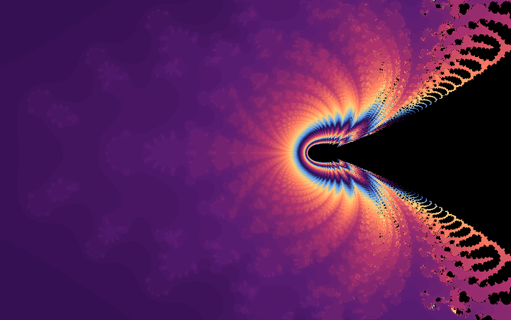

Fractal gallery
Pawn
A compact complex experiment where the exponent changes every step.
Pawn is a small oddity: each pixel starts as both \(z\) and \(c\), then the iteration raises \(z\) to the current iteration number before adding \(c\). The author of this fractal is unknown.

What to try first
Start at the default view. It is already a zoomed-in region, chosen to show the fractal structure.
Increase iterations and watch whether the boundary stabilizes or grows new texture.
Use this as inspiration for the script editor: changing the exponent schedule can create very different behavior.
Mathematical notes
The moving-power recurrence
The map sets \(z_0=c\) and then applies \(z_{n+1}=z_n^n+c\). The exponent is not fixed, so the rule becomes more aggressive as \(n\) increases. A bailout radius of \(2\) separates points treated as inside from escaping points.
Provenance note
wxChaos began around 2010, when the internet still had many small personal websites, hobbyist pages, Geocities-style archives, and scattered collections of mathematical curiosities. Some formulas in the app, including Pawn, were found in places like those and copied into wxChaos as experiments.
At the time, the program was not intended for publication. It was a hobby project called GrufiFractalGen, named after GruFi, the author's science communication group. The goal was to build a flashy app for showing fractals to people, not to create a carefully sourced catalog. Because of that, the original sources were not systematically documented, and many of those old web pages have since disappeared.
If you are the author of this fractal, or if you know anything about its origin, please get in contact.